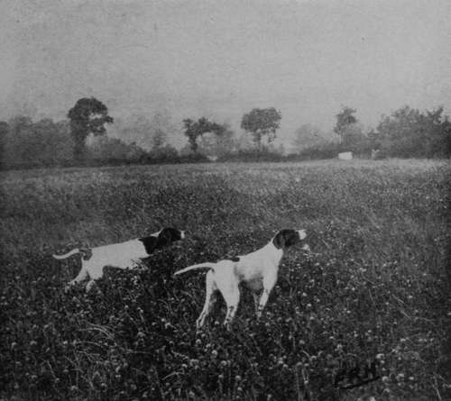
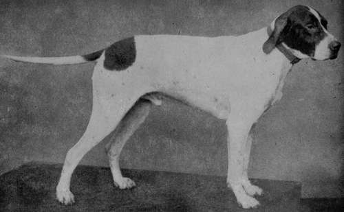
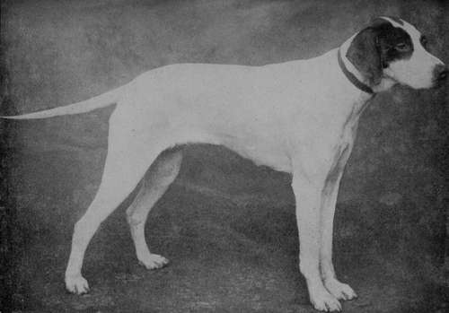
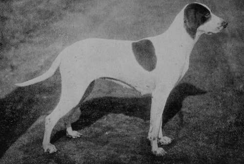
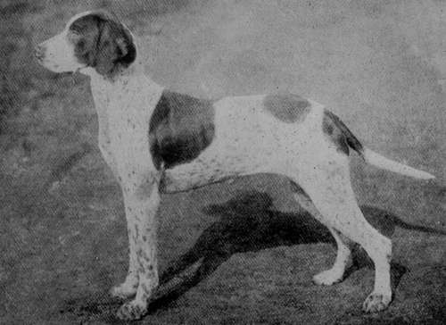

Section A. Chapter I. The Pointer
Description
This section is from the book "Sporting Dogs. Their Points And Management In Health, And Disease", by Frank Townend Barton. Also available from Amazon: Sporting Dogs; Their Points and Management in Health and Disease.
Section A. Chapter I. The Pointer
Most authorities are in agreement that the English Pointer has been derived from a cross of the old Spanish Pointer and Southern Hound, or with the former and a Foxhound.
The old Spanish Pointer was a heavy, loose-made dog, had a large head, short and smooth coat, thin, loose ears and a thin tail.
In colour he was generally black, black and white, liver and white, red and white, dark brown, liver, etc. The breed, it is said, was first introduced into this country by a Portuguese merchant, living and shooting in Norfolk.
According to accounts, the Spanish Pointers had a remarkable degree of scenting power, never missing their game.
In Germany there are two varieties of Pointersthe Rough- and the Smooth-coated. Like the old Spanish Pointer, these dogs are slow, but sure workers: they are heavily built, and frequently liver, or liver and white.
The chief drawback to the Spanish Pointer was his slowness, and indifferent temper. The French Pointer was probably superior, and may have had considerable influence towards making the many good qualities possessed by the English Pointer of to-day. A medium-sized dog is the most useful, the heavy being too slow and the light weights too fast, especially for aged shooters.
The Pointer may be described as fairly hardy; generally of good constitution, and when bred from working parents, puppies usually respond readily to the breaker's tuition.
A second-, or third-season dog, is preferable to a first-season one, so that, when purchasing, this should be borne in mind. Another matter worthy of attention, and that is, never to purchase a Pointer without having him for a week or two's trial on your own shoot.
The colour of a Pointer is more a matter for individual taste, though there is no doubt that one should choose such as can be the most readily discerned in the distance. Lemon and white, black and white, and liver and white ticked, especially the last-named, are the most general colours.
Pointers on Partridges (Property of Mr F. R. Horner).
Photo by Horner.
Pointer Champion Faskally Brag (Property of Mr H. Sawtell).
Liver, and red and white are frequently seen, though the former is not so readily recognisable on ploughed land, etc.
In action, these dogs ought to move with beauty and freedom, unobserved in any other breed. The movements alone ought to be sufficient to create admiration in the mind of the sportsman.
Head
Should be of good size, wide in the dome, and wider between the eyes, with a long, broad, square nose and broad, well-dilated nostrils, giving the head a somewhat square conformation.
In colour, nose ought to be black, but in lemon and white dogs, flesh-coloured. Cartilages of ears, long and thin, covered by soft hair, and carried close to cheeks.
Eyes
Of medium size.
Twenty-four per cent, of points are allowed for skull, nose, eyes, ears, lips, and six for the neck, which ought to be long, arched, and free from loose skin or dewlap. Long oblique shoulders and long arms are essentials of beauty in the Pointer. Forearms long, having plenty of bone and muscle. Pasterns of medium length, feet round (like those of the cat), and the soles hard. A good deal of attention is paid to the legs and feet, by Pointer judges. Some prefer the hare-foot. The elbow must stand well off the brisket and be low placed. Dog must not be " out " at elbow. Viewed from the front, the chest of the Pointer, nevertheless, ought not to be broad, otherwise the beautiful elastic step is interfered with. The contour of the chest is round and deep. Back ribs must be deep, and flanks broad and thick, so as to give strength in these regions.
Back And Hind Quarters
The back should be of good length but strongly built, and the loins broad and deep. First and second thighs well covered with muscle ; hocks strong and good; stifles broad.
Too much importance cannot be attached to the stern of the Pointer, and judges are keen on quality in this region. First of all, it must be strong at its " set on," and gradually taper to a fine point.
If the tail is as thick at the end as it is at its " set on," or coarse in other respects, it indicates inferior breeding. Should be carried on a line with the back.
Faults
Any approach to curl in tail, coarse coat, soft feet, short back ribs, wide chest, too heavy in head and facial expression, short on legs, under- or over-sized, presence of flews or big cheeks, undershot; too much of Hound character, bad temper, disobedience, bad constitution, etc.
Pointer Champion Coronation (Property of Mr H. Sawtell).
Pointer Bitch Barton Beauty (Property of Sir Humphry de Trafford, Bart).
Pointer Bitch Barton Blanche (Property of Sir Humphry de Trafford, Bart).
Value Of Points
Skull ... 10 Ears ... 5
Nose . .10
Neck ... 5
— 30
Shoulders, chest, back and thighs, . 30 colour and coat, . . .10
Stern and general quality, . 10
Legs ... 6
Feet . . 6
Elbow ... 4 Hocks ... 2
Stifles ... 2
— 20
Total . . 100
Continue to: